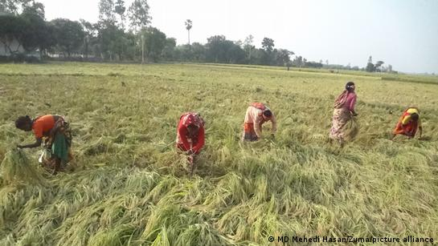
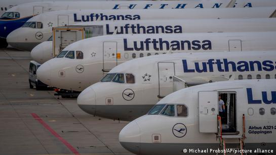
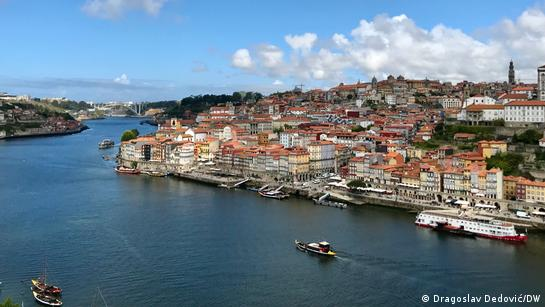

খারাপ খেলে হারলো ভারত, বাংলাদেশের জয়
সমাজ । 2 ঘণ্টা আগে । 5 ছবি
সংবাদ
বিএনপির এমপিরা পদত্যাগ করলে কী হবে?
দক্ষিণ কোরিয়ায় পদপিষ্ট হয়ে মৃতের সংখ্যা বেড়ে ১৫৩
পশ্চিমবঙ্গে ডিজিটাল ব্যাংকের সংখ্যা নিয়েও রাজনৈতিক ‘বিতর্ক’
বিশ্বকাপ দেখতে ছয় মাস আগে কাতারে আর্জেন্টিনার ফ্যান
সব খবর
বাংলাদেশ
দুর্ভিক্ষের শঙ্কা ও মোকাবেলার প্রস্তুতি
বাংলাদেশের প্রধানমন্ত্রী শেখ হাসিনা এখন নিয়মিতই মন্দা আর দুর্ভিক্ষের কথা বলছেন৷
সমাজ । 28.10.2022
বাংলাদেশ থেকে আরো পড়ুনভারত

পুটিনের মুখে মোদীর ভূয়সী প্রশংসা
আগামী ৮ নভেম্বর মস্কোয় যাচ্ছেন ভারতের পররাষ্ট্রমন্ত্রী এস জয়শংকর৷ ক্রেমলিনে মোদীর প্রশংসায় পঞ্চমুখ ভ্লাদিমির পুটিন৷
সমাজ । 28.10.2022
ভারত থেকে আরো পড়ুনজার্মানি
ইরান থেকে আসা বিমানে পাওয়া গেল মৃতদেহ
বৃহস্পতিবার জার্মানির ফ্রাঙ্কফুর্ট বিমানবন্দরে ইরান থেকে আগত বিমানে একটি মৃতদেহ পাওয়া যায়৷
সমাজ । 28.10.2022
জার্মানি থেকে আরো পড়ুনইউরোপ
পর্তুগালের পোর্টো শহরে ওয়াইন ছাড়াও আছে অন্য আকর্ষণ
পর্যটকদের কাছে পর্তুগালের পোর্টো শহরের আকর্ষণ বেড়েই চলেছে৷
সমাজ । 28.10.2022
ইউরোপ থেকে আরো পড়ুনইন ফোকাস
জ্বালানি ও খাদ্য সংকট
প্রধানমন্ত্রী শেখ হাসিনা এখন প্রায় প্রতিদিনই মন্দা আর দুর্ভিক্ষের কথা বলছেন৷ বলছেন প্রস্তুতি নিতে৷ বিশ্বব্যাংকও বলছে ২০২৩ সালে বিশ্ব মন্দার কবলে পড়বে৷
মূল্যস্ফীতি, মন্দা মোকাবিলার জার্মান ‘মন্ত্র’
ইউক্রেন যুদ্ধের প্রভাবে বিশ্বের ধনী দেশগুলোর মধ্যে সবার আগে মন্দায় পড়তে যাচ্ছে জার্মানি ও ইটালি৷
ফয়সাল শোভন
সংবাদভাষ্য
সমাজ । 28.10.2022
দেশের মানুষকে খাওয়ানোর ক্ষমতা ভারতের আছে
শুধু ভোজ্য তেল ছাড়া বাকি সব খাদ্যশস্য, দুধ, ডিম, মাংস উৎপাদনে ভারত স্বয়ংসম্পূর্ণ৷
গৌতম হোড়
সংবাদভাষ্য
সমাজ । 28.10.2022
খাদ্য-জ্বালানির দ্বৈত সংকটের মুখে বাংলাদেশ
বাংলাদেশ কি খাদ্য ও জ্বালানির দ্বৈত সংকটে পড়তে যাচ্ছে? প্রশ্নটা যৌক্তিক কারণেই এখন জোরালোভাবে উঠে আসছে৷
আসজাদুল কিবরিয়া
সংবাদভাষ্য
সমাজ । 28.10.2022
বাংলাদেশের খাদ্য পরিস্থিতির হালহকিকত
জাতিসংঘ বলছে, ২০২২ সালে বাংলাদেশে খাদ্যশস্য উৎপাদন দুই লাখ টন কমতে পারে৷
সমাজ । 28.10.2022
সূর্যের আলো ও শক্তি কাজে লাগান যে ডিজাইনার
নেদারল্যান্ডসের এক ডিজাইনার নিজের সৃষ্টির মাধ্যমে জ্বালানি ও খাদ্য সংকটের নানা সমাধানসূত্র তুলে ধরছেন৷
উদ্ভাবন । 28.10.2022
জ্বালানিসাশ্রয়ী শিল্পের শিল্পী
নেদারল্যান্ডসের এক ডিজাইনার নিজের সৃষ্টির মাধ্যমে জ্বালানি ও খাদ্য সংকটের নানা সমাধানসূত্র তুলে ধরছেন৷
সমাজ-সংস্কৃতি । 28.10.2022